Spec sheet Nº 01 · Rev. 2026
Malik Amdrous Design engineer & product designer.
Product design training, five years in practice, now Lead UI Designer. I take an idea from field research to sketches, 3D models and Figma prototypes — then into the design system and documentation that let a team build it right.
- A — StylusFigma, Blender, AI tools
- B — EarsListens first: interviews, field visits
- C — TailBalance: design systems & tokens
- D — FrameBuilt on product design
- E — PawsHands-on: sketch, 3D, prototype
- Drawn by
- Malik Amdrous
- Currently
- Lead UI Designer, Aunica
- Status
- PhD applicant
- Based
- Casablanca, Morocco
- Research
- Human-centred AI
01 — Approach
Most designers stop at the screen. I work through three layers.
- L1
The person
Go where the problem lives. Field visits, interviews and audits of what people already use — before any pixels.
- L2
The object
Sketch it, model it in 3D, prototype it. Product design — and building real objects, from boat parts to murals — taught me that form follows how something is made and used.
- L3
The system
Components, tokens, documentation and handoff — so the product stays consistent as the team and the scope grow.
02 — Process
From the field
to the system.
Scroll →
-
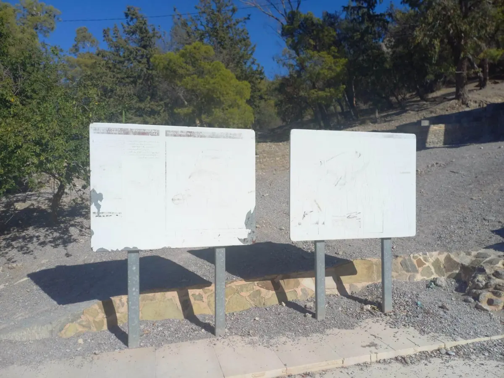
Step 01 · BALIXObserve
Before designing anything for Zaghouan National Park, I walked it and photographed every blank board and torn sign.
-
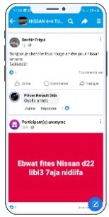
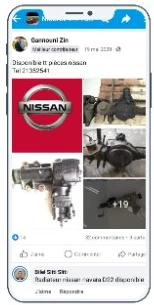
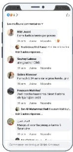
Step 02 · MX GarageAudit
Mapped how people really buy used parts in Tunisia: Facebook groups, free-text posts, prices only by phone.
-
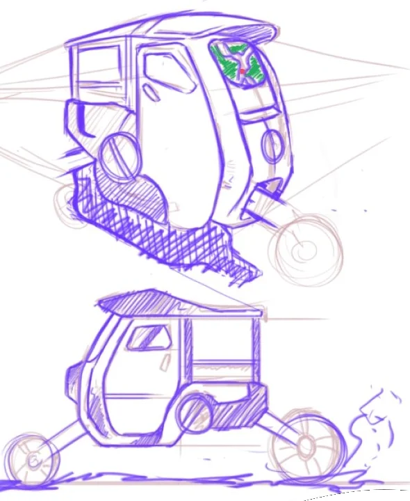
Step 03 · BALIXSketch
Vehicles, docking stations and terrain — explored by hand first, where changing your mind is cheap.
-
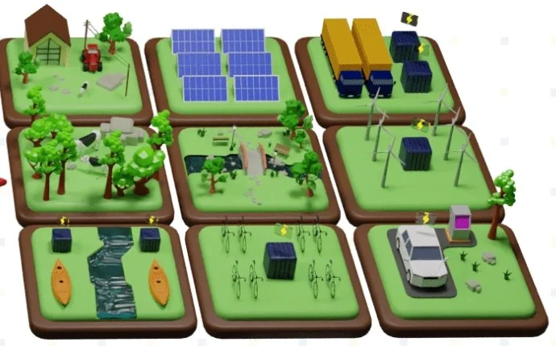
Step 04 · BALIXModel
Built the park in Blender in three phases — today, six months, five years — to make the rollout realistic.
-
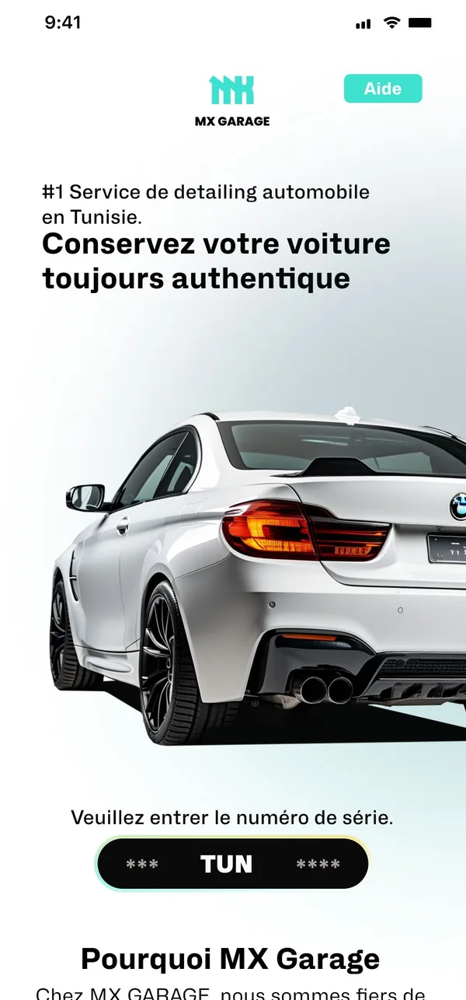
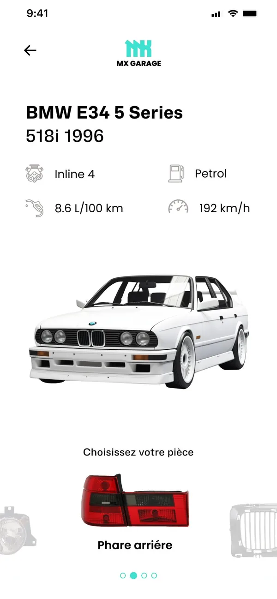
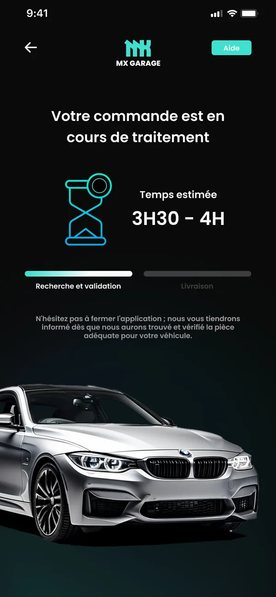
Step 05 · MX GarageSpecify
Two complete themes and 20+ screens, with components built alongside — tested with users, then documented.
-
Step 06 · In-house
Ship & document
In product teams: a Figma design system that cut design production time by 30%, component libraries, prototypes and reviews with product and engineering.
03 — Projects
Parts list.
Six products. Two documented end to end — the other four live on Contra while I write them up.
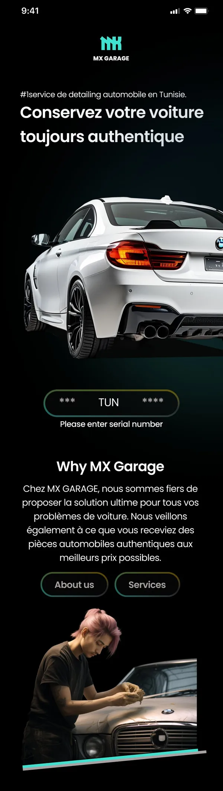
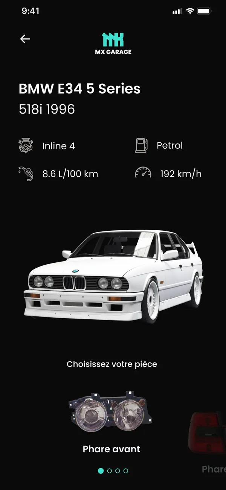
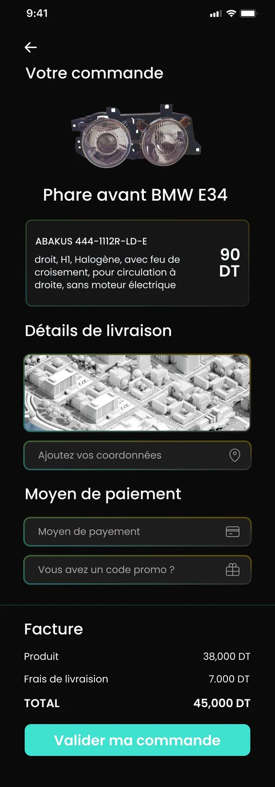
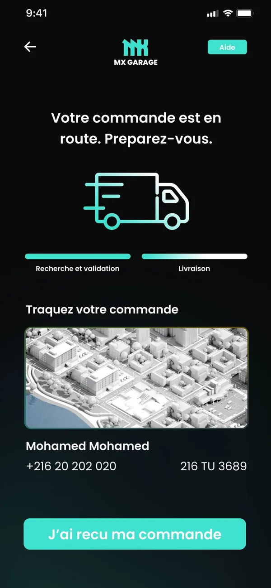
P—02 BALIXEco-mobility service for a national park · 2026 redesign Field research · Service design · Industrial · App Case study →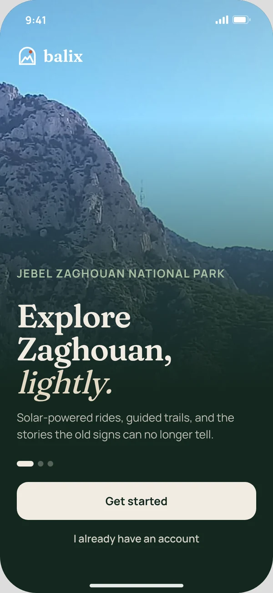
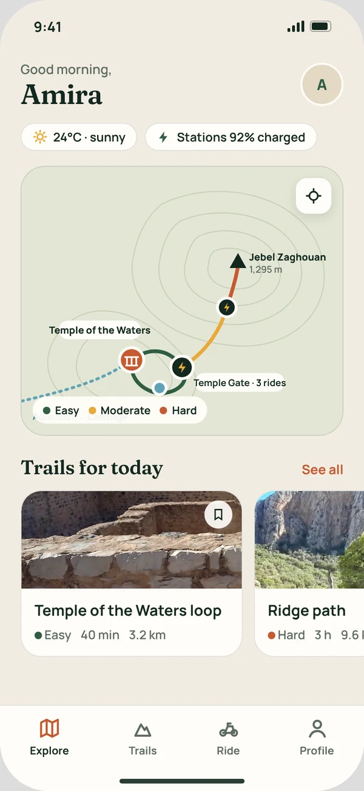
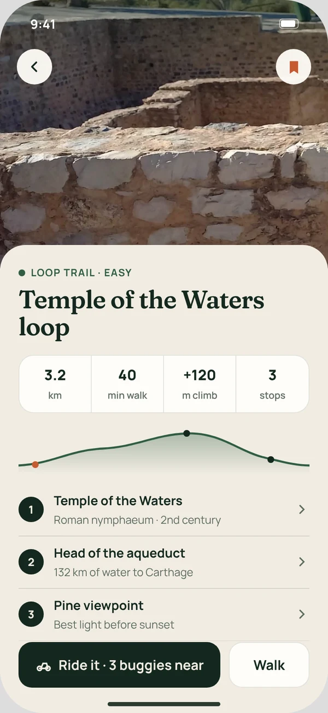
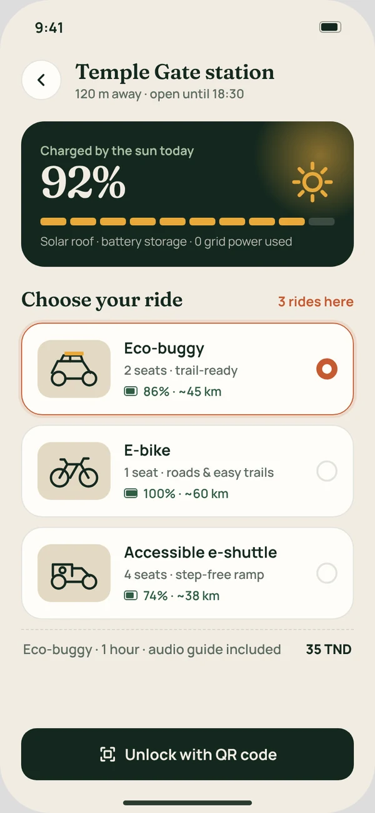
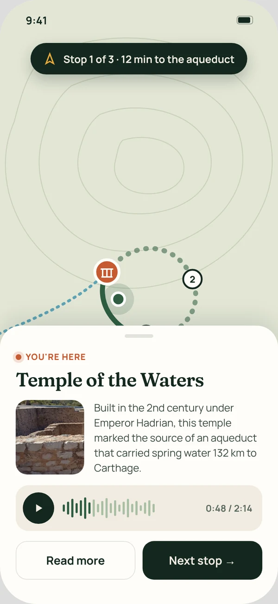
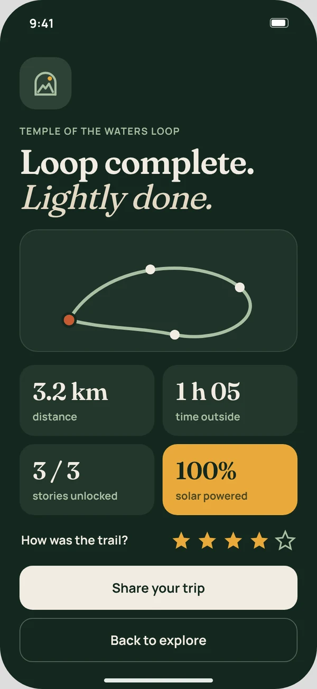
P—03Sneaker marketplacePersonalised shoppingMobile app · E-commerceContra ↗ P—04Streetwear websitePersonalisation experienceWeb design · E-commerceContra ↗ P—05Manga reading appFor manga fansMobile app · ContentContra ↗ P—06ScoopWebsite redesignWeb redesignContra ↗04 — Data sheet
Technical
specifications.
- Function
- Lead UI Designer · Product designer · Design researcher
- Education
- Professional Master's in Digital Design (2022–2024) · Bachelor's in Product Design (2019–2022) — Higher School of Design Sciences and Technologies, Tunis
- Experience
- Lead UI Designer, Aunica Inc (US) · UI/UX Designer, MSavoir (Casablanca) · Product designer & visual artist, DEBO (Tunisia) · Industrial design intern, Nottoy Boats
- Inputs
- Field research · Interviews · Benchmarks · UX audits · Prioritisation
- Outputs
- Sketches · 3D models · Figma prototypes · Design systems · Handoff docs · Motion videos · Brand identities
- AI
- Generative AI across the design engineering workflow — ideation, imagery, prototyping and production
- Toolchain
- FigmaProtopieAdobe XDWebflowBlenderSplineZBrushIllustratorPhotoshopProcreateGenerative AIHTML/CSS
- Languages
- Arabic (native) · French (fluent) · English (professional)
- Style
- Human-centred · Minimal · Joyful
05 — Release notes
Version history.
From murals and handmade objects to leading UI systems — one release at a time.
- v3.0
Lead UI Designer · Aunica Inc Current
United States · November 2025 – present
- Leads UI systems across web, mobile and software platforms
- Applies AI across the design engineering workflow, from ideation to production
- Produces motion design videos for SaaS products
- Set design standards, component libraries and visual language
- Runs user flows, personas and usability evaluations
- v2.0
UI/UX Designer · MSavoir
Casablanca, Morocco · January 2024 – November 2025
- Built a Figma design system — design production time cut by 30%
- Shipped prototypes and UIs — user engagement up 25%
- Ran design reviews and cross-functional workshops
- v1.5
Professional Master's — Digital Design
Tunis · September 2022 – January 2024
User research, personas, interaction and UI design, UX strategy. Projects included MX Garage and BALIX.
- v1.2
Industrial Design Intern · Nottoy Boats
Tunisia · February – April 2022
Boat components from sketch to 3D model to production: laser cutting and resin injection.
- v1.0
Bachelor's — Product Design
Tunis · September 2019 – January 2022
Sketching, 3D modelling, materials and how things actually get made.
- v0.1
Product designer & visual artist · DEBO
Tunisia · January 2018 – August 2023
First release. Handcrafted products from sketch, 3D and sculpting — and murals for arts festivals, leading teams of artists.
06 — Research
Also applying
for a PhD.
I want to research human-centred AI — how people create with it, trust it and access it, in digital products and physical ones — and stay in research and teaching for the long term.
Target fields
- Design research · research through design
- Human-Computer Interaction (HCI)
- Human-Centred AI · Human-AI Interaction
Human-AI co-creation
How designers create with generative AI, what it does to creativity and ownership, and what good co-creative tools look like.
AI in physical products
Smart objects and assistive devices that learn and adapt — where my product design training meets AI.
Trust & explainability
Making AI decisions understandable to everyday users, and knowing when people over- or under-trust it.
AI for accessibility
Designing AI with and for people with disabilities and underrepresented communities and languages.
Research practice so far
- Field research & site documentation
- Interviews & persona development
- Usability testing
- Participatory design exercises
- Benchmarks & UX audits
Supervisors, labs and programmes — I'd love to talk. melekamdrous@gmail.com
07 — Contact
Let's build the
next version.
Applying for PhD positions in Design and Human-Computer Interaction — and always happy to talk design, research and AI.